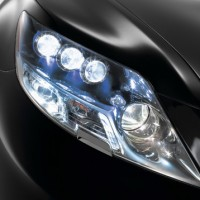
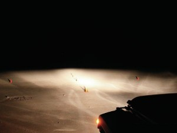
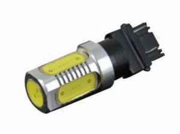
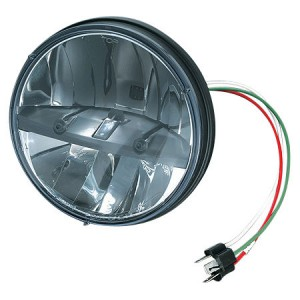
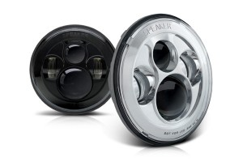
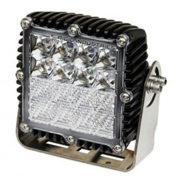
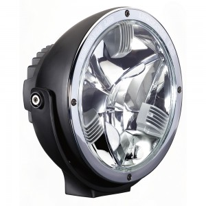
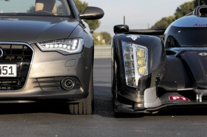

Немного о светодиодных автомобильных лампах

В LED лампах используется технология так называемого «твердотельного светоиспускания» (solid-statelightingSSL). Работа светодиодных автомобильных ламп принципиально отличается от обычных или галогенных. Вместо испускания света из вакуума или газа, свет излучается из твёрдого материала. Как правило, этим материалом является полупроводник (строго говоря, два полупроводника с разной проводимостью объединены в одно целое). Излучение создаётся за счёт движения электронов. Одним из недостатков светодиодных ламп является более высокая цена. Однако, это не мешает им набирать популярность в автомире, не в последнюю очередь это обусловлено такими преимуществами как мощный световой поток, низкое энергопотребление, а также долговечность, ведь свет испускает твердотельный диод, а значит выгорания лампы произойти не может, также они обладают высокой стойкостью к механическим воздействиям.
Методика испытаний ламп{kind=link}

Схема расстановки конусов при тестировании
Научные достижения последних лет обеспечили большой прирост производительности светодиодных ламп. Наилучшие образцы обеспечивают на 90%больше освещение на расстоянии 75 м спереди автомобиля. В последние годы также большое внимание уделялось углу рассеивания пучка света светодиодных ламп. Для того, чтобы установить насколько совершенными стали современные LED лампы,SeanP. Holman провёл исследование, в котором рассматривались лампы, установленные на крышу внедорожника, а также на уровне фар легкового автомобиля. В качестве подопытного был выбран WranglerUnlimited, испытания проводились в ночное время с разными типами ламп, которые отличались по мощности, углам освещения, количеству светодиодов. Также, для сравнения, в тестировании участвовала галогенная лампа X-tremeVision. Проверка работы светодиодов в качестве фар легкового автомобиля выполнялась традиционным способом – измерялся уровень освещённости на расстоянии 50 м от автомобиля (у обочин и перед автомобилем) и на расстоянии 75 м по центру. Полученные данные усреднялись для каждого расстояния.
По центру автомобиля через 25 метров были установлены конусы. Для фиксации уровня освещенности на обочине, два конуса были вынесены на расстояние 25 метров в стороны от центрального.
Epistar HighPowerОтносится к классу бюджетных. Лампы для автомобиля этого производителя имеют цоколь
{kind=link}

Лампа Epistar High Power
Н4 и десять светодиодов. Каждый из них оборудован светоотражателем. Два диода расположены на торце лампы, их свет сфокусирован линзой, остальные расположены радиально. Рабочая область защищена от механических воздействий колбой. По заявлениям производителя лампа должна обеспечивать яркость на уровне 1500 лм. Для работы необходим источник питания 10 – 30В, максимальная мощность лампы составляет 50 Вт.
По субъективным впечатлениям, они проигрывают обычным лампам на дальней дистанции, результаты эксперимента подтверждают это. Отзывы автомобилистов также говорят в пользу полученных результатов. Кроме недостаточного уровня освещения многие жалуются на проблемы в работе при переключении ближнего и дальнего света. При включении может сгореть предохранитель на 10 – 20 ампер. Для работы потребовался 30 амперный предохранитель, но при этом стало невозможно переключение ближнего и дальнего света. Пожалуй, лучшим вариантом их использования станет установка в габариты, роль основных или вспомогательных фар им не по плечу.
Truck-Lite 7-inch Phase 7{kind=link}

Лампа Truck-Lite 7-inch Phase 7
На сегодняшний день это один из двух лидеров в сфере светодиодного освещения. Этот комплект предназначен для установки на крышу в качестве дополнительного освещения, хотя может использоваться и в мотоциклах, легковых автомобилях. Для изготовления использованы поликарбонатные линзы с твёрдым покрытием, метализированный отражатель. В качестве источника света выступает 2 ряда светодиодов, может работать от источника питания 12 и 24 В. Заявленная мощность светового потока составляет 1300 Лм, наибольший диапазон изменения силы освещения среди аналогов, характеристики потока близки к дневному освещению. Встроена защита от чрезмерного напряжения (пиковое значение до 600 В), диапазон рабочих температур от -40°С до 50°С. Электронная начинка залита эпоксидной смолой, что исключает коррозию и выход из строя.
Результаты испытаний подтвердили высокие характеристики ламп этого производителя. Даже на расстоянии 75 метров видимость чёткая и ясная, на расстоянии до 50 метров обеспечен хороший обзор обочин. Единственный выявленный недостаток – возможные артефакты в виде буквы “X”, которые могут проявляться на расстоянии 40 – 60 метров.
J.W. Speaker 8700 EvolutionЭта модель ламп была представлена в 2012 году и до сих пор является лучшей в своём
{kind=link}

Лампа J.W. Speaker 8700 Evolution
сегменте. Отказ от использования устаревших концепций оптического дизайна, например, параболических рефлекторов позволил получить отличную видимость на расстоянии свыше 75 метров, вдаль светит узким пучком, а вблизи – широко рассеянным светом. Световое пятно перед водителем очень яркое. Несмотря на яркий свет, исключено ослепление водителя встречного транспорта, в дождливую, сырую погоду бликов от капель почти нет.
Работает от источника питания 12 – 24 В. Особенность работы лампы состоит в том, что при одновременной работе ближнего и дальнего света мощность светового потока равна 1350 Лм, при работе только ближнего света – 650 Лм, дальнего – 760 Лм.
Использованы поликарбонатные линзы, лампы устойчивы к тряске, вибрации, ударам, защищены от коррозии. Благодаря этому, а также особенностям конструкции эта модель не только соответствует, но и превышает требования ЕС.
К единственному недостатку этих ламп можно отнести высокую цену.
RigidIndustries Q4 Hybrid{kind=link}

Лампа Rigid Industries Q4 Hybrid
Лампа устанавливается на крыше автомобиля или на экспедиционный багажник. Это достаточно массивная конструкция весом 4 кг, включает в себя 16 мощных светодиодов. Пиковая мощность лампы составляет 80 Вт, а светоотдача равна 5440 Лм. В конструкции использованы отражатели дальнего и ближнего света (10° и 20° соответственно), линзы изготовлены из небьющегося поликарбоната, а сам корпус – из алюминия, это способствует отводу тепла. Гарантированно сохраняет работоспособность в диапазоне температур от -40°С до 63°С. Ресурс работы около 50000 часов. Для устранения перегрева встроена система регулирования тепловыделения.
Горнодобывающая промышленность часто использует лампы этого производителя, поэтому они сертифицированы по стандарту защиты IP68 и устойчивости к вибрации MIL810-STDG.
В системе использована комбинированная линза, это даёт яркое световое пятно непосредственно перед водителем, с дальностью освещения тоже не возникает проблем.Судя по отзывам владельцев, практически лишена недостатков, разве что потребление 50 Вт выглядит чрезмерным на фоне аналогов.
Hella Luminator LEDЭта модель может использоваться как основные или вспомогательные фары.
{kind=link}

Лампа Hella Luminator LED
Конструкция оптимизирована для получения мощного луча света на близких и дальних расстояниях. Цельнометаллический корпус, рефлектор и кронштейн крепления изготовлены из литого под давлением алюминия, это обеспечивает герметичность рабочей камеры лампы. Форма отражателя оптимизирована с учётом расположения светодиодов. Освещение дороги равномерное, яркое, заметны даже мелкие детали на расстоянии до 200 метров. Из-за особенностей размещения диодов, световое пятно начинается на некотором расстоянии от автомобиля.
Линза изготовлена из ударопрочного поликарбоната. Фара состоит из трёх диодов. Для работы потребуется источник питания 9 – 34В, при этом мощность одной лампы равна 30 Вт. Уровень светового потока составляет 2700 Лм, цвет – белый, по яркости приближен к дневному свету. Отзывы владельцев подтверждают результат испытаний, в основноммодель применяется в качестве вспомогательной фары. Особенно автомобилисты отмечают эффект от её использования на бездорожье – не искажает рельеф местности, в то же время даёт яркий свет.
Подведение итоговПо сравнению с галогенными или ксеноновыми лампами, светодиодные аналоги проигрывают в цене. Кроме этого, пока что нерешённым остаётся вопрос большого тепловыделения мощных ламп. Стоимость LED ламп низкого класса сопоставима с ксеноновым освещением высшего класса. Пожалуй, именно это и сдерживает широкое распространение светодиодов.

{kind=link}
Тем не менее, при выборе ламп для фар автомобиля сейчас не следует торопиться. На современном этапе развития LEDлампы или стоят слишком дорого или, в случае малой цены, «радуют» владельца целым букетом проблем – это и чрезмерный нагрев, и слабый уровень освещения и т.д.
Так что наиболее логичным выходом в данной ситуации будет ожидание. Лидеры производства LEDламп уже близки к решению главных проблем этой технологии. Через 2-3 года технические решения станут доступны остальным производителям, и это снизит их цену. При желании можно использовать светодиоды и сейчас, но скорее в качестве вспомогательного освещения.